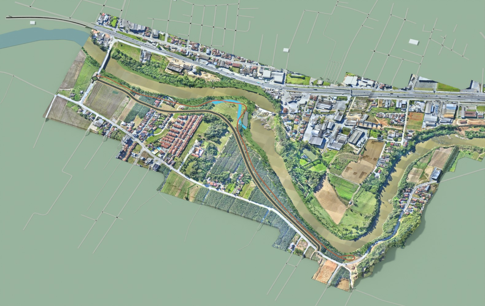
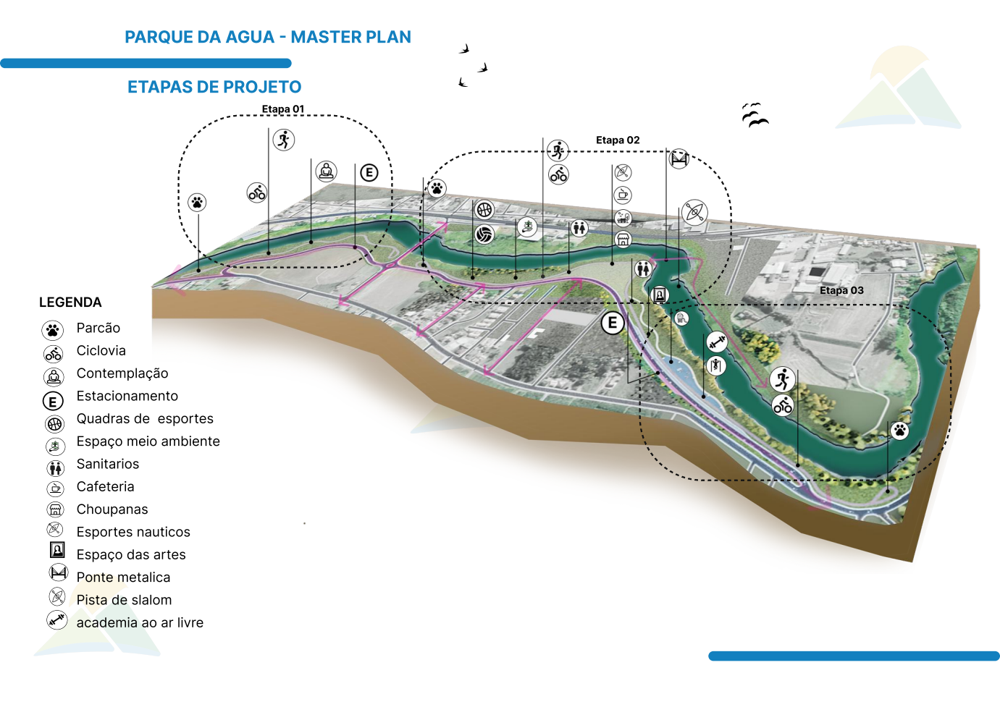
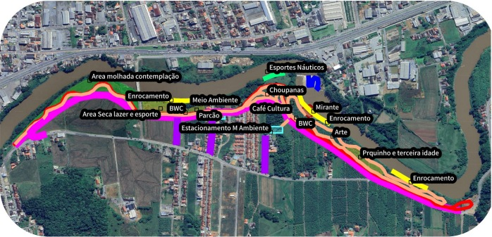
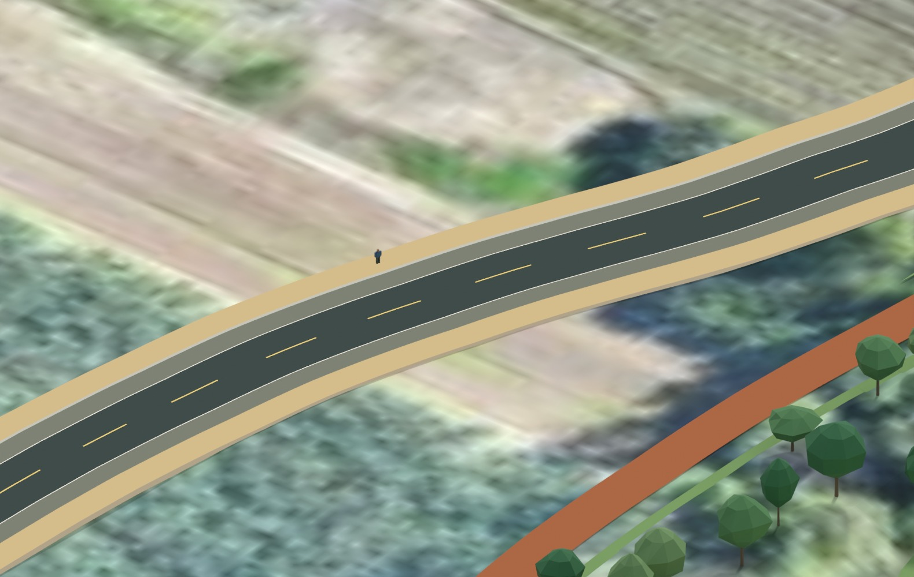
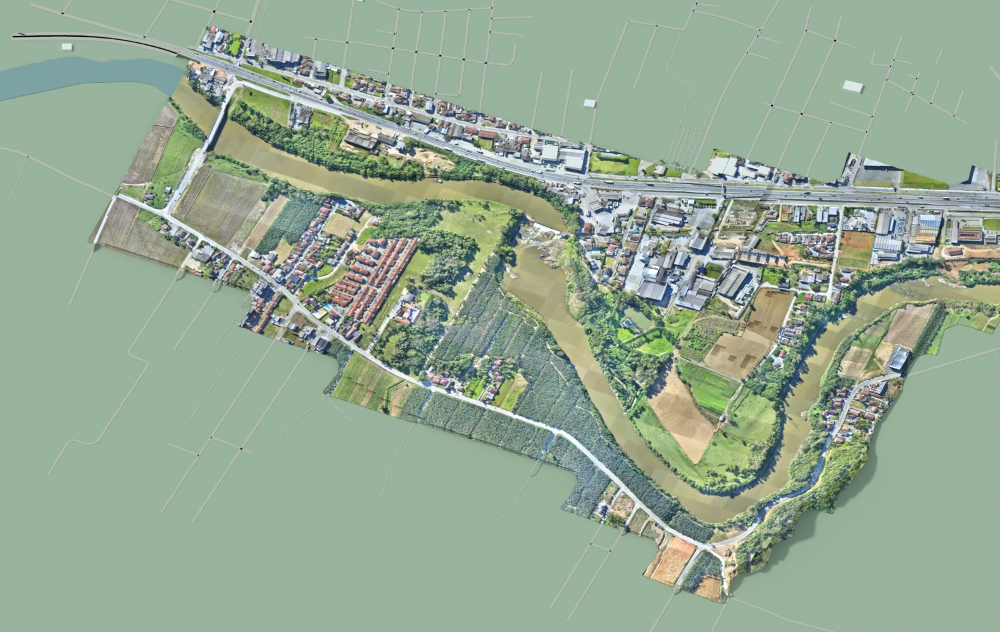
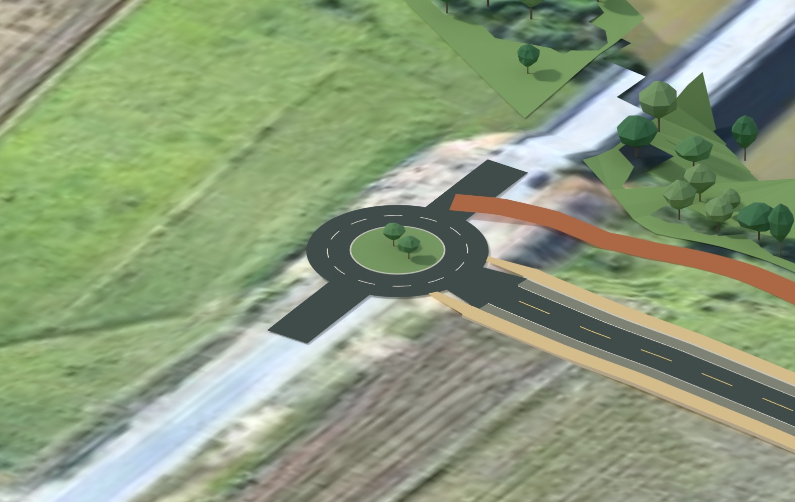
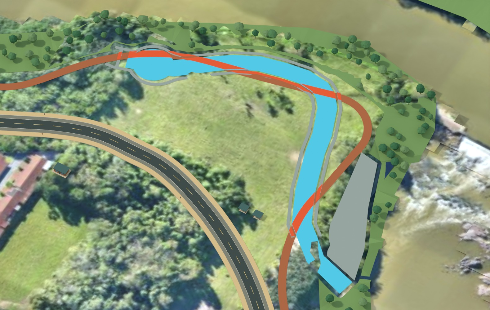
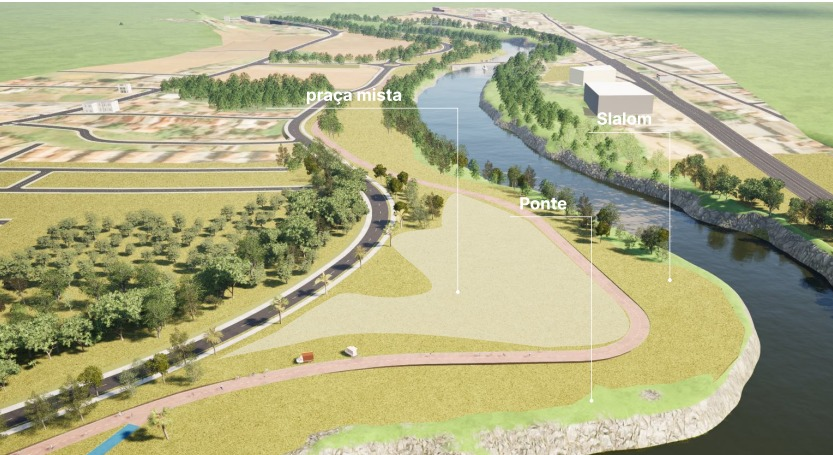

Setor central
Áreas esportivas, espaços de convivência, canoagem slalom e atividades ligadas ao rio.

Estudo preliminar · Etapas 02 e 03
Um parque linear às margens do Rio Itapocu, com esporte, lazer e convivência conectados pela Via Parque e por uma faixa contínua de micromobilidade.
Implantação
O masterplan divide o parque em três etapas. Esta maquete desenvolve as etapas 02 e 03; a etapa 01, a oeste, segue em consolidação.
Áreas esportivas, espaços de convivência, canoagem slalom e atividades ligadas ao rio.
Percurso ao longo da margem com caminhada, bicicleta, lazer ao ar livre e pontos de permanência.
Via Parque: InfraWorks ROADS 1130 (≈ 1.545 m). Micromobilidade: ROADS 1127 (≈ 1.913 m). A extensão 1129 corresponde à etapa 01 e ficou fora da intervenção. A transição 02/03 segue a leitura da prancha 30 da apresentação, com limite indicativo.

Programa · Layout R00
Os números correspondem aos pinos da maquete. Clique em um item para abri-lo diretamente no 3D.

Via Parque
Calçadas de 3,00 m em ambos os lados, estacionamento de 2,50 m e pista de 7,00 m com duas faixas.
Percurso contínuo para caminhada e bicicleta acompanhando o eixo de ciclovia do InfraWorks.
A revisão ampliou as calçadas de 2,50 m para 3,00 m. O detalhe dimensional anterior da micromobilidade somava 6,50 m (2,50 m caminhada + 4,00 m bicicleta); o estudo adota o novo gabarito de 5,00 m. Cotas e inclinações servem à visualização; o ajuste vertical deriva do MDT de apresentação.

Antes e depois
Arraste a divisória para comparar o levantamento atual com a proposta das etapas 02 e 03. No 3D, a mesma troca mantém a câmera e as camadas.

ExistenteProposta
Acesso oeste · Etapa 02
Uma rotatória arborizada conecta a Via Parque à rua existente. Gramado e arborização ilustram o tratamento das margens junto à APP.
Anel, ilha e concordâncias modelados em nível conceitual, com ajuste visual do terreno junto à ligação. Raios, acessos, giro e perfil aguardam validação viária.
Rio Itapocu · Etapa 02
O pré-projeto prevê um canal junto à represa. A implantação foi georreferenciada pela ortofoto que acompanha o desenho e sobreposta à maquete.
Cerca de 664 m² do canal e das áreas de intervenção coincidem com a faixa de micromobilidade. O gabarito viário de 18 m passa fora desse recorte. A continuidade do percurso precisa ser resolvida em projeto.
Fonte: PRÉ-PROJETO CANAL GUARAMIRIM.dwg, prancha de 17/07/2025. Encaixe em SIRGAS 2000 / UTM 22S pela moldura CAD 7E276 e pelos quatro limites da ortofoto (5 cm); diferença menor que um pixel. Quatro polígonos selecionados (duas áreas de água e duas de intervenção) cruzados em planta com a faixa nominal de 5 m. Configuração hidráulica, cotas e estruturas devem ser compatibilizadas nas respectivas disciplinas.


Estudo preliminar R00
A entrega urbanística reúne esses usos no mesmo setor. A sobreposição em 3D mostra onde o novo canal interfere com o percurso da micromobilidade antes de detalhar acessos e travessias.
Compatibilização
Três formas de consultar o projeto, do panorama ao detalhe técnico.